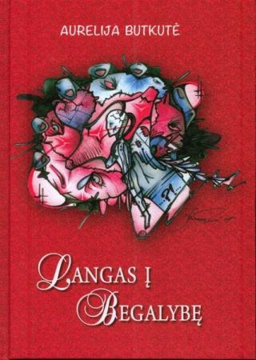
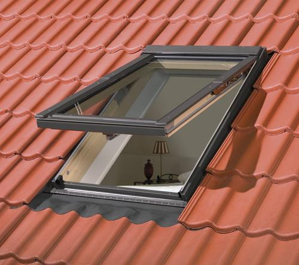
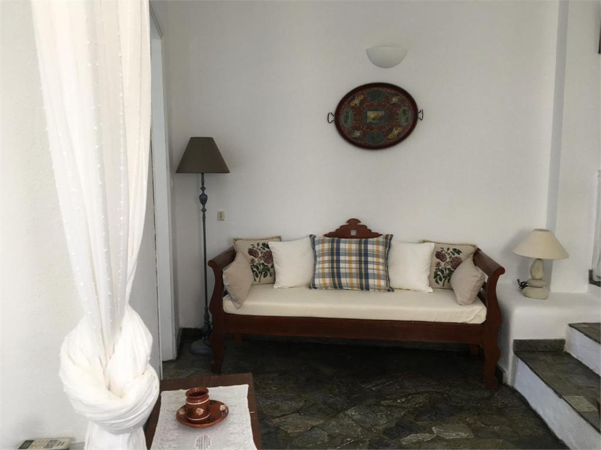

Choras Langas
2020.10.27 11:56

Skip to Main Content Area
Visi chorai →
+370 686 23 096
rita@choras.org
Mišrusis suaugusių choras
Pradžia Apie chorą Vadovė Chorvedžiai Kviečiame naujus narius Repertuaras Mišios ir koncertai Galerija KontaktaiArtėjančios Mišios
Šv. Mišios Bernardinų bažnyčioje. Giedos choras Langas 2020 Lapkričio 1, 17:00 (Sekmadienis) Aušros Vartų Gailestingumo Motinos Globos atlaidai. Šv.Mišios Šv.Teresės bažnyčioje 2020 Lapkričio 20, 19:00 (Penktadienis) Šv. Mišios Bernardinų bažnyčioje. Giedos choras Langas 2020 Lapkričio 22, 17:00 (Sekmadienis) Šv. Mišios Bernardinų bažnyčioje. Giedos choras Langas 2020 Gruodžio 20, 17:00 (Sekmadienis) Piemenėlių šv. Mišios. Bernardinų bažnyčioje giedos choras Langas 2020 Gruodžio 24, 21:00 (Ketvirtadienis)Artėjantys koncertai
Advento vakaras Bažnytinio paveldo muziejuje (Šv. Mykolo bažnyčioje) 2020 Gruodžio 5, 17:00 (Šeštadienis) Šv.Liucijos koncertas 2020 Gruodžio 13, 18:00 (Sekmadienis) Tradicinis Bernardinų Kalėdų koncertas 2020 Gruodžio 30, 19:00 (Trečiadienis)© 1990–2012 Choras langas | Prisijungti | Registruotis (naujiems nariams)
Puslapių kūrimas
- Plastikiniai Langai Vilniuje | Kaune - Gera Kaina Internetu
- Knygu Langas
- Apie chorą | Choras Langas
- Langas į valdžią - LRT
- Langas PLASTIMET CLICK-ON MD - Milanga
- Langas į vaiko pasaulį - Knygos internetu www.mintis.eu
- IS langas - atverk, pažink, suprask! Informacija apie ...
- Langas sapne :: Sapnų reikšmės | Laimos sapnininkas
- langas - išsamiai DELFI.lt
- langas - Vikižodynas - Wiktionary
- Plastikiniai Langai Vilniuje | Kaune - Gera Kaina Internetu
Plastikinis šiltas langas iš KÖMMERLING 76 MD profilio – A+klasė. Šilumos laidumo koeficientas iki Uw=0.85-0.91 W/m2K.(naudojant termo rėmelį) Gaminamas iš vokiško 6 kamerų, 3 sandarinimo tarpinių, 76 mm pločio KÖMMERLING 76 MD plastikinio profilio .
- Knygu Langas
NOVATORIŠKAS LANGAS SU AUTORINE PVC LANGŲ PROFILIŲ SISTEMA IR MODULINE KONSTRUKCIJA RĖMAS 6 kamerų, 80 mm montavimo gylio profilis. PATOGU NAUDOTI dėl glotnaus bei atsparaus atmosferos veiksniams išorinio paviršiaus langus lengva valyti. Užapvalintas stiklajuostės kampas palengvina švaros palaikymą. DAUGIAU ŠVIESOS palyginus su kitais rinkoje esančiais...
- Apie chorą | Choras Langas
Nauju knygu elektronine parduotuve internete Knygu Langas. Ivairiausiu zanru knygos vaikams ir suaugusiems, grožinė literatūra, žodynai, dovanu knygos, enciklopedijos, pažintines.
- Langas į valdžią - LRT
Nieko nebijantys jaunieji Šiaulių medikai: bus karšta, bet mes viską atlaikysime medikams gelbsti grupės „The Roop“ šokis 1383
- Langas PLASTIMET CLICK-ON MD - Milanga
Mjanmų kalba: nurodykite žodžio langas vertimą(-us) (Mjanmų kalba), žr. Mongolų kalba: цонх (tsonh) Norvegų kalba: vindu Oksitanų kalba: fenèstra Nyderlandų kalba: raam , venster , ruit Šablonas:mhrv1 тӧрза (törza)
- Langas į vaiko pasaulį - Knygos internetu www.mintis.eu
“Langas” yra varstomas, lyg keičiant galimybių dvelksmą nuo “neįsivaizduojamo”, t.y. visiškai svetimo visuomenės dorovės principams, kurį visiškai atmeta “dabartinės politikos” etape, iki stadijos, kada jau plačiai diskutuojama, masinės sąmonės priimta ir įtvirtinta įstatymu.
- IS langas - atverk, pažink, suprask! Informacija apie ...
Langas - Uždarytas - drąsa pasieksi tikslą; iškristi pro jį - pavojus; Matyti sapne stogo langą - pasisekimas. Matyti nešvarius langus - sapnuojančio žmogaus gyvenimo būdo pavyzdys. Jei jie apšviesti saulės - sąžinės graužimas. Jeigu sapnuojate, kad langą liečiate pirštais, vadinasi, Jus kankins abejonės dėl mylimo žmogaus.
- Langas sapne :: Sapnų reikšmės | Laimos sapnininkas
Knygoje „Langas į vaiko pasaulį" pateikiama daug praktinių pavyzdžių, kaip galime pažvelgti į paslaptingą vaiko pasaulį, jį suprasti, padėti išgyventi krizes, įveikti sunkumus, paskatinti augimą. Tam svarbu nuoširdžiai domėtis vaiku, priimti jį tokį, koks yra, būti greta.
- langas - išsamiai DELFI.lt
sm. (3) 1. SD222, R, LsB168 rėmai su stiklais, įtaisyti namo, susisiekimo priemonės ir kt. sienose šviesai įeiti; anga rėmams, patys rėmai ir stiklai rėmuose: Saulės atšvitulys į langą tviska J. Trobos langai užburbėję, užšalę, net baltuoja iš…
- langas - Vikižodynas - Wiktionary
Chorą "Langas" 1990 metais subūrė vadovė Rita Kraucevičiūtė. Iki 1995 metų kolektyvas priklausė įvairioms meninėms struktūroms: Šiuolaikinio meno centrui, galerijai "Langas", Lietuvos dailininkų sąjungai. 1995 metais choras "Langas" buvo pakviestas į naujai pašventintą šv. Pranciškaus Asyžiečio ir šv.
Plastikinis šiltas langas iš KÖMMERLING 76 MD profilio – A+klasė. Šilumos laidumo koeficientas iki Uw=0.85-0.91 W/m2K.(naudojant termo rėmelį) Gaminamas iš vokiško 6 kamerų, 3 sandarinimo tarpinių, 76 mm pločio KÖMMERLING 76 MD plastikinio profilio .
NOVATORIŠKAS LANGAS SU AUTORINE PVC LANGŲ PROFILIŲ SISTEMA IR MODULINE KONSTRUKCIJA RĖMAS 6 kamerų, 80 mm montavimo gylio profilis. PATOGU NAUDOTI dėl glotnaus bei atsparaus atmosferos veiksniams išorinio paviršiaus langus lengva valyti. Užapvalintas stiklajuostės kampas palengvina švaros palaikymą. DAUGIAU ŠVIESOS palyginus su kitais rinkoje esančiais...
Nauju knygu elektronine parduotuve internete Knygu Langas. Ivairiausiu zanru knygos vaikams ir suaugusiems, grožinė literatūra, žodynai, dovanu knygos, enciklopedijos, pažintines.
Nieko nebijantys jaunieji Šiaulių medikai: bus karšta, bet mes viską atlaikysime medikams gelbsti grupės „The Roop“ šokis 1383
Mjanmų kalba: nurodykite žodžio langas vertimą(-us) (Mjanmų kalba), žr. Mongolų kalba: цонх (tsonh) Norvegų kalba: vindu Oksitanų kalba: fenèstra Nyderlandų kalba: raam , venster , ruit Šablonas:mhrv1 тӧрза (törza)
“Langas” yra varstomas, lyg keičiant galimybių dvelksmą nuo “neįsivaizduojamo”, t.y. visiškai svetimo visuomenės dorovės principams, kurį visiškai atmeta “dabartinės politikos” etape, iki stadijos, kada jau plačiai diskutuojama, masinės sąmonės priimta ir įtvirtinta įstatymu.
Langas - Uždarytas - drąsa pasieksi tikslą; iškristi pro jį - pavojus; Matyti sapne stogo langą - pasisekimas. Matyti nešvarius langus - sapnuojančio žmogaus gyvenimo būdo pavyzdys. Jei jie apšviesti saulės - sąžinės graužimas. Jeigu sapnuojate, kad langą liečiate pirštais, vadinasi, Jus kankins abejonės dėl mylimo žmogaus.
Knygoje „Langas į vaiko pasaulį" pateikiama daug praktinių pavyzdžių, kaip galime pažvelgti į paslaptingą vaiko pasaulį, jį suprasti, padėti išgyventi krizes, įveikti sunkumus, paskatinti augimą. Tam svarbu nuoširdžiai domėtis vaiku, priimti jį tokį, koks yra, būti greta.
sm. (3) 1. SD222, R, LsB168 rėmai su stiklais, įtaisyti namo, susisiekimo priemonės ir kt. sienose šviesai įeiti; anga rėmams, patys rėmai ir stiklai rėmuose: Saulės atšvitulys į langą tviska J. Trobos langai užburbėję, užšalę, net baltuoja iš…
Chorą "Langas" 1990 metais subūrė vadovė Rita Kraucevičiūtė. Iki 1995 metų kolektyvas priklausė įvairioms meninėms struktūroms: Šiuolaikinio meno centrui, galerijai "Langas", Lietuvos dailininkų sąjungai. 1995 metais choras "Langas" buvo pakviestas į naujai pašventintą šv. Pranciškaus Asyžiečio ir šv.
  